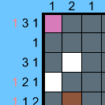

Inspirado en el juego de puzzles Nonogram. Los niveles se crean de forma procedural, sólo teniendo que crear un sprite nuevo para nivel. De esta forma crear niveles nuevos es algo realmente sencillo.

Este juego surgió como un regalo de cumpleaños para una persona que disfrutaba mucho el clásico Nonogram, por lo que
decidí hacerle una versión personalizada.
Pedí a un grupo de amigos que cada uno hiciera una imagen, y le pusiera el fondo y título que quisiera, de ahí que la
mitad de las imágenes y títulos no tengan sentido.
Juego hecho con Unity
Para el futuro me gustaría revisitar este proyecto, para añadir un selector de niveles y hacer yo cada una de las imágenes de forma que todo quede relativamente cohesionado.